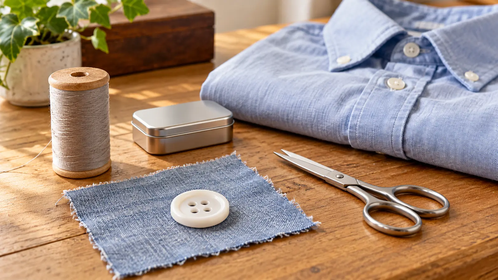

0–5 minutes: set up
Count one needle, one pair of scissors and the buttons being used. Clear food, drinks and distractions. Agree on the stop-and-put-down signal.
AT HOME · 30 MINUTES · AGES 8–12 WITH AN ADULT · EXPLORATION
Do not turn a missing button into a shopping trip. Practice one small repair, keep the sharp tools controlled and stop while the work is still patient.

Start with scrap woven fabric and a large, easy-to-see four-hole button. The first result is a practice sample. Only move to a low-value ordinary shirt if the adult can already demonstrate the technique and inspect the result. Do not make tomorrow morning’s school uniform the deadline for a beginner’s first stitches.
Choose intact fabric with a straightforward missing button and an appropriate replacement. Torn cloth, delicate fabric, lined coats, hidden fastenings and valuable garments need a different repair. Do not alter protective clothing, climbing equipment, car-seat components or other safety-critical products. Garments for very young children are outside this lesson: loose buttons can become small-part hazards. The Patagonia/iFixit four-hole repair guide specifically directs garments for children three and under toward professional repair rather than this type of home repair.
Check the garment’s spare-button packet or inside tag before shopping. A button must fit its buttonhole and the garment, not merely look similar in a jar. Do not substitute a thick craft needle that damages the cloth or a decorative button that cannot pass through the hole. This can cost nothing extra if the supplies are already at home; no universal supply price is claimed.
No affiliate kit is attached to this lesson. A large assortment is not a prerequisite for learning one stitch. If you lack suitable supplies, borrow an adult-owned kit with permission or use the paper version first. Do not raid someone else’s valuable sewing equipment or clothing for parts.
The adult chooses the fabric and needle, checks the original button position, prepares the thread, demonstrates the stitch path, manages trimming and makes the final repair judgment. A child can choose matching thread, identify the four holes, mark the sample location, count repeated passes and gradually do supervised stitches. Do not promise that every child should manage the sharp part on the first night.
Keep fingers out of the needle’s intended path. Do not sew a garment while anyone is wearing it, hold a needle in the mouth, walk around with it or leave it loose on a sofa. Put the needle in its holder before answering the phone or standing up. If it drops, stop movement, keep children and pets clear and have the adult locate it before restarting. Do not continue with a replacement while the first remains missing.
The adult should first review the illustrated UF/IFAS 4-H button lesson and the linked four-hole repair guide. These are technique references; our table-time plan is a teaching adaptation. Here is the short path to demonstrate:
Do not invent a universal stitch count or tug-test force. Fabric, thread, button and wear differ. If the adult cannot show the clearance and finishing step confidently, stay on scrap and learn from the primary illustration before attempting a garment.
With the shirt off the body, let the adult close and open the buttonhole. The button should fit through without forcing and should sit with the clearance the fabric needs. Look for puckering, a loose loop, damaged cloth, an exposed sharp item or a button attached in the wrong position. Compare with a neighboring sound button where appropriate.
An attractive cross of thread is not a load rating. If the button shifts, the cloth tears, the knot slips or the closure binds, do not send the garment into service because the child worked hard. Thank the effort and let the adult redo the repair or use a qualified repair service. Pride in making something and responsibility for checking it can coexist.
Use a well-lit table before everyone is exhausted. Finish food first, put drinks elsewhere and use the restroom before bringing out the needle. The adult should be seated and available, not cooking on the other side of the room. Spread the work over two evenings if threading uses up the first block.
Let the child narrate one choice: why this button fits, why the knot is on the underside or why the needle must be counted back. That is more useful than racing a sibling. The one-on-one framework also works for a short practical skill rather than a whole outing. No camera, app, posting or public proof is required.
No needle: draw four large holes on a paper button and have the child trace an X path with a pencil. An adult can prepare a large cardboard lacing board for use with a blunt-ended lace if appropriate for the child; it teaches order, not garment strength. Keep the lace controlled and out of reach of younger children. Do not call the paper result a finished repair.
Low energy: spend five minutes finding a spare button and comparing it with the buttonhole, then put everything away. Vision or dexterity needs: enlarge the demonstration, improve contrast or let the child direct while the adult stitches. If a sharp tool is not suitable, the child’s checking and planning jobs remain real participation. Adapt the activity without making the child defend why a task is difficult.
Count tools before the sample leaves the table. Store the needle securely, close the scissors, return unused buttons to a lidded container and remove thread scraps from the work surface and floor. Keep the repair sample labeled as practice so it is not mistaken for a checked garment. Do not leave a partly threaded needle inside a folded shirt.
Put the ordinary household kit somewhere an adult can control, not in a child’s unsupervised bedroom craft bin. Use the calendar reset if a second practice session would help, and the small-kit selection rule for the broader idea: organize the few tools the task needs before buying more containers.
Skip when the adult cannot demonstrate and supervise, the table cannot be kept clear of younger children, the needle cannot be accounted for, lighting is poor or the child is already frustrated or tired. Skip the real repair when the fabric is damaged, the garment is valuable or the fastening affects safety. Choose the paper path or a low-energy living-room plan instead.
The aim is a useful repair habit: choose a manageable job, practice, inspect and put the tools away. It is not a promise of independence after one session, a money-saving guarantee or evidence that every repair can be done at home.
Reviewed October 19, 2026 by Mr Adventure Dad Editorial Desk using UF/IFAS 4-H’s button lesson and the Patagonia/iFixit four-hole button guide linked above. The session timing, role split, no-needle alternative and counted-tool closeout are our original family teaching framework. No personal repair test or educational outcome is claimed. The conceptual photo shows supplies, not the correct stitch sequence. Use the public correction route for sourced factual issues without posting private child information.
MAKE THE WEEK COUNT
Build the plan your family can finish well, then leave enough energy for the next part of the day.
More family plans